browse!
> whether you hold earthly wants or otherworldly desires feast your hungry eyes upon artefacts seldom seen!
> whether you hold earthly wants or otherworldly desires feast your hungry eyes upon artefacts seldom seen!
 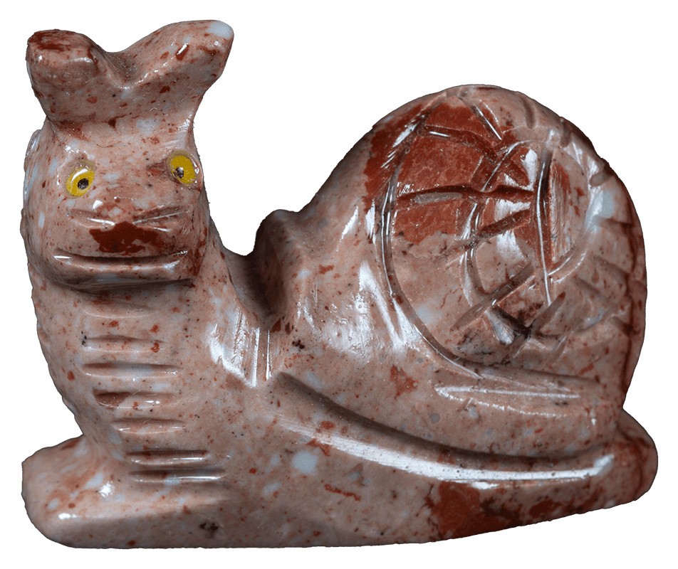
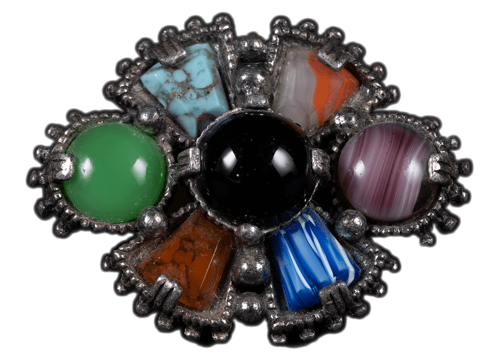
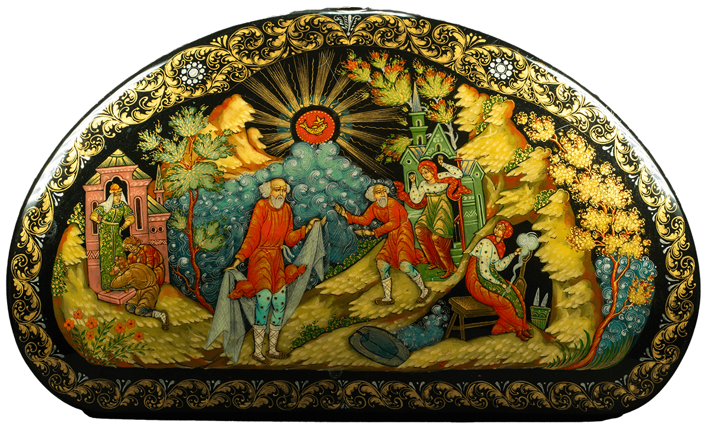
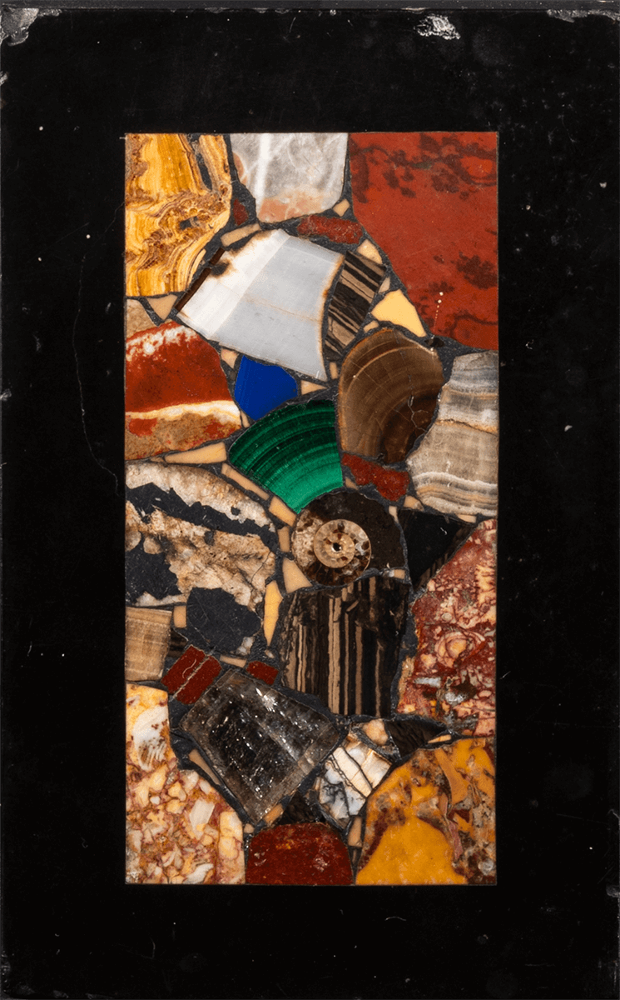
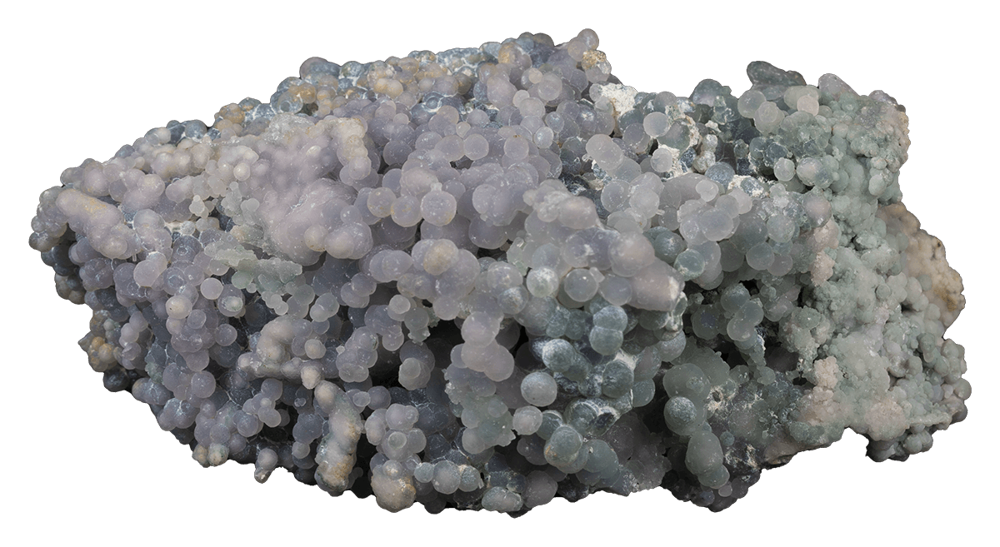
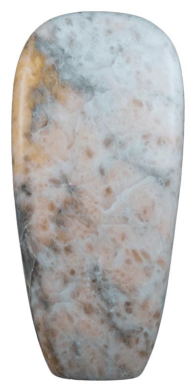
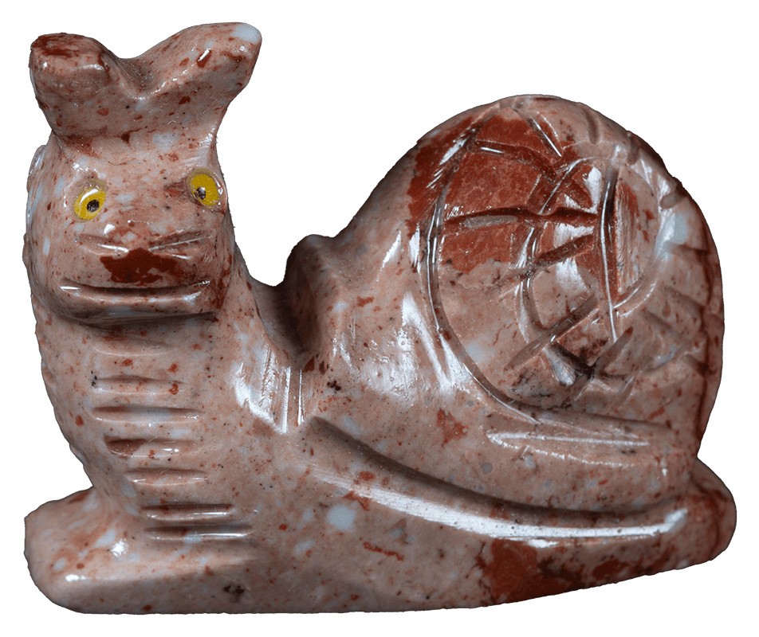
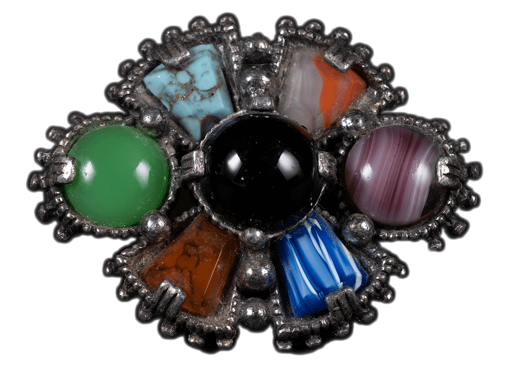
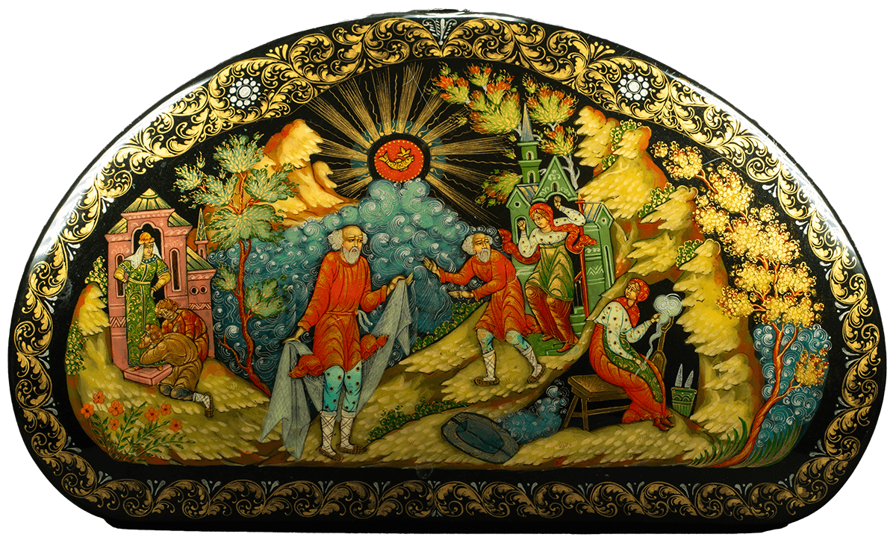
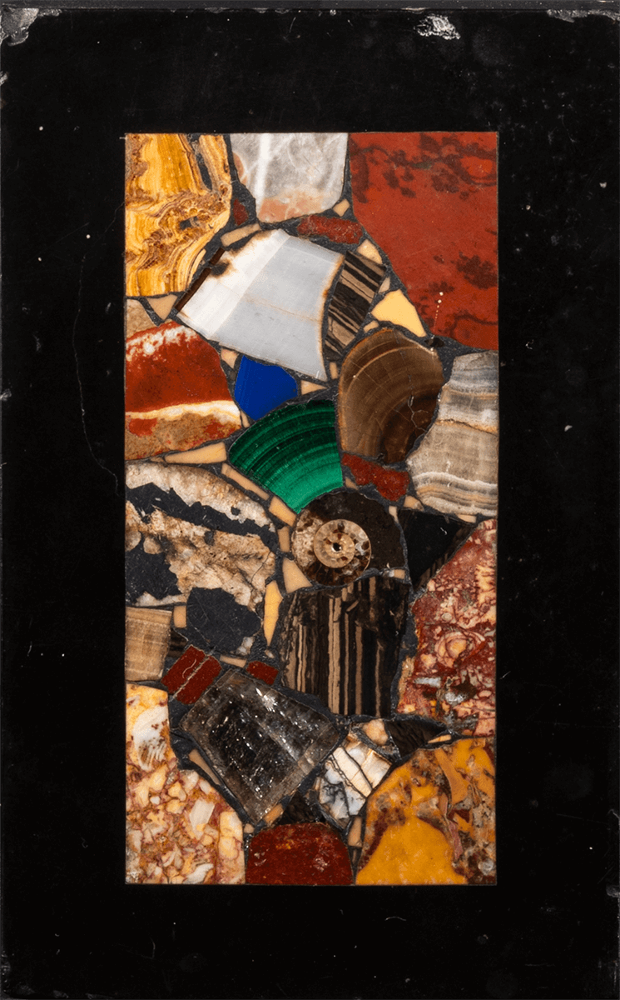
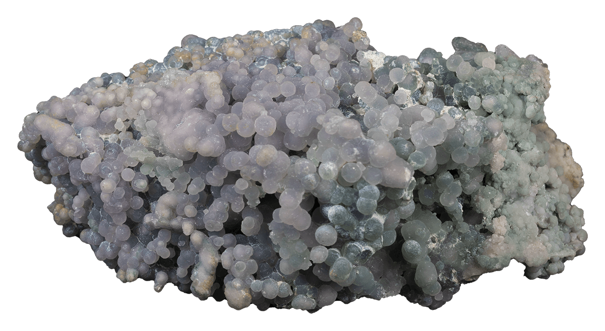
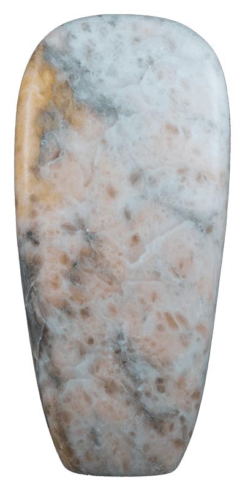
select an item to view info
---